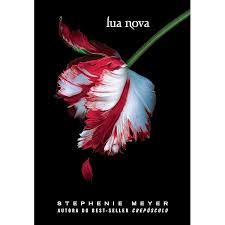
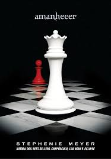

Crepúsculo
Crepúsculo, de Stephenie Meyer, acompanha Bella Swan, uma adolescente que se muda para Forks e conhece Edward Cullen, um misterioso e belo colega. Ela descobre que Edward é um vampiro centenário que evita se alimentar de sangue humano. Apesar do perigo, eles se apaixonam, mas sua relação é ameaçada por vampiros hostis que colocam Bella em risco. O livro mistura romance, fantasia e suspense, explorando os desafios de um amor impossível e os perigos envolvidos no mundo de Edward.

Eclipse (2010)
Eclipse (2010), o livro da saga Twilight de Stephenie Meyer, continua a história de Bella Swan, que se vê dividida entre dois amores: o vampiro Edward Cullen e o lobisomem Jacob Black. Enquanto o romance entre Bella e Edward se aprofunda, uma nova ameaça surge quando um exército de vampiros é criado para caçar Bella, colocando sua vida em perigo. Com o conflito crescente entre vampiros e lobisomens, Bella precisa tomar decisões difíceis sobre seu futuro, suas relações e o preço de viver no mundo sobrenatural. O livro mistura ação, romance e escolhas emocionais difíceis, enquanto Bella enfrenta um destino incerto e ameaçador.
Amanhecer (2011)
AMANHECER, o livro da saga Twilight, segue Bella Swan, agora transformada em vampira, após se casar com Edward Cullen. Ela e Edward têm uma filha, Renesmee, cuja nascente ameaça gerar um conflito com os Volturi, a poderosa facção de vampiros. Bella, agora parte do mundo dos vampiros, precisa lidar com as mudanças que surgem ao se tornar imortal e com a proteção de sua filha contra uma acusação falsa. O livro traz ação, lealdade e escolhas difíceis, com uma grande batalha que poderá mudar para sempre o destino dos personagens principais.
